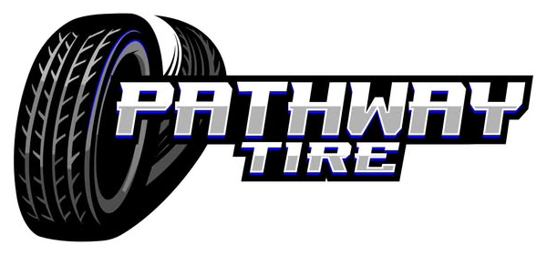

Passenger & truck tires
Sales, mounting and balancing.
Ask about passenger & truck tires →
Pathway TireLocally owned tires on Highway 84 for cars, trucks, farm equipment and side-by-sides, with crews who will even come out to your land.
Sales, mounting and balancing.
Ask about passenger & truck tires →Tractor and side-by-side tires.
Ask about farm & utv tires →Flats, patches and tire shakes fixed fast.
Ask about repairs & shakes →Four hours from home with a bad tire shake at 4:15 on a Friday, and they had them back on the road in 30 minutes.
They came out to the land, pulled the tractor tire, fixed it and put it back on.
| Mon–Fri | 7 AM–5 PM |
|---|---|
| Sat–Sun | Closed |